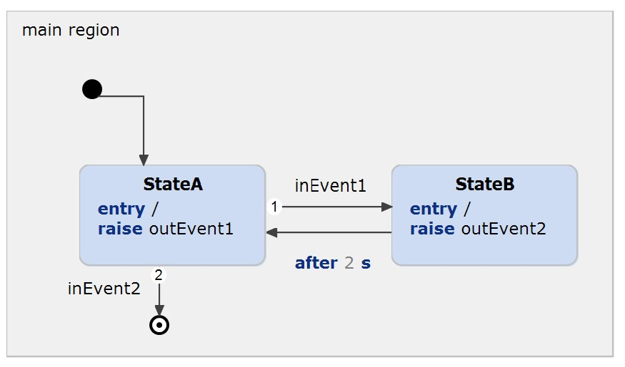

Embedded Systems Integration Guide - Zephyr Integration.
This example has been created to illustrate how itemis CREATE can be integrated in Zephyr. You can find a detailed description in our documentation.
The state machine contains the following parts:

In order to run the example, Zephyr must be installed. Please follow the Getting Started Guide and ensure that you can at least run the "Hello World" example.
Open a terminal and cd to the root of this project, run west build and execute the binary. Ensure that the state machines code has been generated.
cd "path to your project"
west build -b native_posix . -p always
./build/zephyr/zephyr.exe